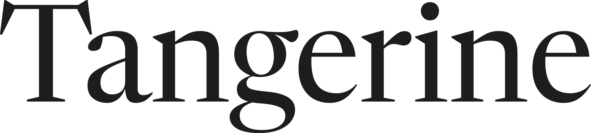

A Helvetica Neue Medium · −34 tracking, T–a tightenedRing above · copy: the plain statement
An independent creative studio led by Cole Calfee.
Creative direction and business building for a select number of clients.
Begin a conversationNeutral and exact. The most “Swiss” answer, closest to the current site. It is precise, but it could belong to many studios: the name carries no voice of its own.
B SF Pro Display Semibold, lowercase · −45 trackingRing as lockup · copy: the relationship
An independent creative studio led by Cole Calfee.
Long-term creative partnerships with people making extraordinary things.
Begin a conversationNative and product-like; the ring reads almost as a letter. It is beautiful on Apple devices, but SF Pro is licensed only for Apple platforms: it cannot become a logo file, and on Windows or Android it falls back to another face.
C Newsreader Display, outlined · −20 tracking, hand-kernedRing above, noon index · copy: the practice and the pace

An independent creative studio led by Cole Calfee.
Creative direction and business building.
A few clients at a time, for a long time.
The unexpected one, and the basis of the site. An editorial serif gives the name a voice (a publisher, an atelier, a person), while everything around it stays Apple-quiet. Outlined and hand-spaced, it looks identical on every device and is free to use as a logo (SIL Open Font License).
D C, with the name in tangerine · implementedRing above · same copy
An independent creative studio led by Cole Calfee.
Creative direction and business building.
A few clients at a time, for a long time.
Implemented. Warm and immediate: the name carries the colour, and the dot and chevron echo it. Orange is kept to large display (about 3.2:1); every word you read is grey or ink.
E C, with an original fruit mark inside the ringSun still orbits the rim · same copy
An independent creative studio led by Cole Calfee.
Creative direction and business building.
A few clients at a time, for a long time.
Inspired by the profile picture: fruit within a circle. Two tangerines on one twig: a studio and a client, growing together. Drawn flat and original. On the page, the orbiting sun competes with the fruit, so the drawing became the favicon instead, where it is clearer than a ring.